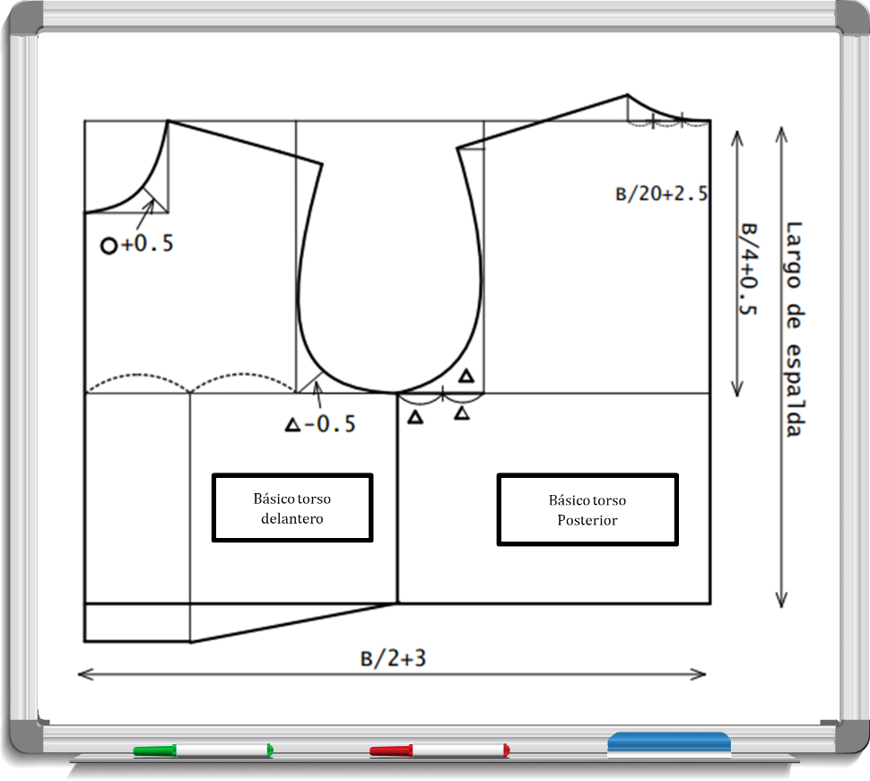

Introducción
Actualmente la industria de la moda requiere de altos estándares de calidad, lo cual se logra no solo a partir de los insumos y la maquinaria, sino del proceso de estructuración de las prendas a confeccionar mediante el patronaje, una actividad que requiere de precisión y exactitud en el diseño de la moldería y el escalado de las tallas a partir de los bocetos o diseños de modelos.
Por ello es necesario comprender y describir los procesos de patronaje, corte y trazo para relacionarlos con los procesos de confección, con el fin de determinar las diversas rutas operacionales de acuerdo con las líneas de producto y la tecnología disponible para realizar procesos de confección de calidad.
En el patronaje industrial “cada pieza del patrón modelo debe contener toda la información necesaria, dirección en la que se ubica el patrón sobre la tela, cantidad de piezas por modelo, la simetría, el nombre de la pieza y el nombre del modelo al que pertenece” (Carrera de Diseño y Gestión en Moda, 2015, pág. 9), de forma que conocer e interpretar la señalización de patrones es fundamental en los procesos de control de calidad.
1. Patronaje básico
La actividad del patronaje se constituye como la actividad básica en la creación de las prendas, es definido como el proceso mediante el cual se elaboran todas las piezas y moldes necesarios para la creación y estructuración de una prenda, este proceso se encuentra ligado al proceso creativo del diseñador.
1.1. Terminología técnica y convenciones del área de patronaje industrial
La comunicación es primordial para el logro de los objetivos de una empresa, por lo tanto todas las áreas de la planta deben definir e identificar los conceptos propios del proceso para su aplicación en una determinada sección sin inconvenientes y no alterar la calidad de la prenda al momento de avanzar en las diferentes secciones o áreas de producción.
El patronaje es la técnica de desarrollo de las plantillas resultado de la interpretación del diseño de la prenda, tiene en cuenta las medidas del cuerpo, las cuales pueden ser tridimensionales o bidimensionales. De acuerdo con la industrialización del proceso se hace necesario convenir en el uso de términos y de símbolos, es necesario que se maneje un lenguaje técnico relacionado al proceso, como por ejemplo, hilo de tela, línea de aplome, ampliaciones, desahogos, entre otros para su aplicación en el procedimiento.
Para identificar los patrones, debe indicarse de manera ordenada:
Nombre de la pieza
Referencia, nombre del diseño, el cual para diferenciarse puede utilizar números, letras o una combinación de ambos.
Talla, según el cuadro de tallas.
Número de veces a cortar
Línea de aplome, dirección del corte del patrón, se debe indicar en cada pieza del patrón.
En la siguiente figura se puede observar el despiece y rotulación de algunos patrones, en los cuales se observa el orden en su identificación.
Las convenciones son símbolos para poder identificar el patrón o molde y las claves geométricas también se requieren para poder desarrollar cada pieza, conforme al diseño especificado.
Los materiales y herramientas para desarrollar manualmente los patrones son papel molde o manifold, tijeras de papel, portaminas, borrador, micropuntas de colores, pegante en barra, rodaja, punzón y las reglas de patronaje.
1.2. Especificaciones técnicas de patronaje, medidas y cuadro de tallas, proporciones del cuerpo humano.
La función del patronaje es realizada por el patronista, persona capacitada en interpretar el diseño y en construir los patrones, los cuales como se mencionó anteriormente deben incluir cortes, pinzas, amplitudes, aplomes (piquetes) y anchos de costura.
El listado de medidas son las tomadas en una persona para desarrollar el patrón teniendo en cuenta los puntos de referencia corporal; se pueden mencionar el punto de acromio, zona umbilical, fosa supraclavicular, entre otros.
Existen dos tipos de medidas, verticales y horizontales, a su vez se habla de medidas bidimensionales que se aplican por ejemplo a lo largo, es decir en dirección vertical, por ejemplo largo de falda, largo de talle; y medidas a lo ancho en dirección horizontal como el ancho de pecho, también se incluye en las horizontales las tridimensionales, las cuales son contorno de pecho, cintura y cadera, tal como se observa en la siguiente figura.
Los materiales y herramientas para desarrollar manualmente los patrones son papel molde o manifold, tijeras de papel, portaminas, borrador, micropuntas de colores, pegante en barra, rodaja, punzón y las reglas de patronaje.
Teniendo en cuenta lo mencionado, hay que tener presente que el cuerpo humano es considerado un cuerpo geométrico tridimensional irregular, el cual se asemeja a la figura geométrica de un cilindro conformado por su contorno, que una vez abierto forma un rectángulo, el cual es el área en la que se trabaja el patrón. Al dividir en dos partes el rectángulo, una parte corresponde al posterior del cuerpo y la otra mitad corresponde a la parte anterior o delantera del cuerpo, basados en la simetría del cuerpo humano, es decir, que el lado derecho es igual al lado izquierdo, por lo cual se puede trazar solo la mitad del delantero y así mismo con el posterior.
En consecuencia, existen medidas horizontales como el ancho de pecho y ancho de espalda que se dividen en dos para trazar en el patrón y las medidas de contornos (busto, cintura, cadera) se dividen en cuatro para poder trazar en el patrón.
La empresa debe conocer al consumidor, su antropometría y así con un estudio minucioso establecer una tabla de medidas en donde se estandarice por tallas. Las tablas muestran en orden creciente las medidas y su talla, conforme a la proporción, la cual se entiende como una unidad de medida constante, y es aplicada en cada talla para establecer su variación. Las tablas de medidas pueden cambiar en una misma línea de producto, conforme el mercado, la marca del producto o tipo de tejido
1.3. Procedimiento de patronaje
El espacio para realizar la actividad de patronaje debe contar con una mesa plana de trabajo uniforme, suficiente para colocar pliegos de papel manifold o cartón cartulina, sus materiales y herramientas en el caso que sea de manera manual; el patronaje requiere precisión en el trazo de las líneas y curvas, aplicar correctamente las medidas y cortar los patrones según el paso a paso del desarrollo del molde. A partir de las medidas del patrón una vez desarrollado, se trazan además los anchos de costuras alrededor del trazo de cada pieza. De allí el cuadro de medidas de prenda terminada y de patrones para luego ejecutar el control de calidad.
Además de la opción de realizar el patronaje manual, actualmente se utilizan programas de software especializados en los que se desarrolla el patronaje, el escalado y trazo de las prendas. Los más utilizados son Audaces, Optitex, Lectra, Gerber,, entre otros, los cuales optimizan el tiempo de las actividades en un alto porcentaje.
Los anchos de costura aplicados, dependen del tipo de costura y conforme a las normas de calidad en el proceso industrializado, en donde se considera un (1) cm de ancho de costura, pero además se debe tener en cuenta el ajuste y características de las máquinas, por ejemplo, el ancho de un sobrehilado puede variar según el ajuste por tanto puede afectar las medidas de los contornos en una camiseta cuando se unan a los costados, de allí puede ser 0,5 cm o 0,7 cm el ancho de costura, variando 2 mm que en total del contorno equivale a 2mm x 4mm = 8 mm, es decir casi un centímetro lo que afectará las medidas de prenda terminada.
El procedimiento de patronaje manual se desarrolla en tres pasos básicos como muestra en la siguiente figura y los cuales cuentan con una serie de actividades a realizar y las cuales permiten el desarrollo de un patrón con las características recibidas en la orden de trabajo.
Tomar con la cita métrica las medidas requeridas según el patrón a partir de los puntos corporales de referencia.
Realizar medidas de contornos las cuales se toman alrededor del cuerpo (tridimensionales).
Realizar las medidas de los largos y anchos (bidimensionales).
Hacer el patrón plano conforme a la prenda, el cual debe estar disponible para realizar transformaciones conforme al diseño y a la tela.
Realizar el patrón acorde a la simetría del cuerpo, los contornos de cintura, cadera, pecho, aplicando las fórmulas y procedimientos para su desarrollo.
Seleccionar la talla de la escala de tallas.
Desarrollar el plano teniendo en cuenta el diseño de la prenda.
Despiezar las partes que conforman el patrón plano.
Cortar la muestra o prototipo para comprobar el cumplimiento de las especificaciones de patronaje con el diseño y las medidas.
Ensamblar el prototipo o muestra.
Analizar y evaluar muestra treminada.
Realizar ajustes.
Proceder con la segunda muestra o prototipo.
Aprobar el patron una vez cumpla con los requisitos.
Una vez se aprueba el prototipo o muestra, desarrollado de forma manual o asistido por computador, se procede a realizar el escalado de cada pieza que compone el patrón, como lo muestra la figura, a lo cual se le denomina nido.
1.4. Patronaje básico en cada línea de producción
Como se ha visto, es importante establecer los patrones básicos en cada línea de producción para luego proceder a realizar las transformaciones necesarias según el diseño del modelo.
Se desarrollan patrones básicos de corpiño en la línea femenina para realizar blusas, vestidos y chaquetas; así mismo, para confeccionar prendas elásticas se desarrollan patrones básicos de corpiños especializado para este tipo de textiles las cuales son reducidas según su elasticidad. También se desarrollan patrones básicos de falda y pantalón para las prendas inferiores.
En la línea masculina se desarrollan patrones básicos de torso y pantalón; y para la línea infantil se desarrollan patrones básicos de torso, falda y pantalón.
1.4.1. Patronaje básico femenino.
Para construir el patrón básico de corpiño se requieren las medidas de talle delantero, talle posterior, hombro, escote, ancho de pecho, ancho de espalda, altura de busto, separación de busto, contorno de busto y contorno de cintura. Es importante ubicar el centro frente y centro atrás en el papel que equivale al orillo a lo largo del pliego, es decir en línea vertical.
En la figura que se observa a continuación se identifica el patrón básico de corpiño femenino.
1.4.2. Patronaje básico infantil.
Conforme a la morfología corporal de los niños, es necesario tener en cuenta para construir el patrón básico del torso las medidas de talle delantero, talle posterior, hombro, escote, ancho de pecho, ancho de espalda, contorno de pecho y contorno de cintura. Si se utiliza el papel manifold debe dejarse un espacio de margen para el manejo en la parte superior de aproximadamente cuatro (4) cm.
En la figura se observa el patrón básico de torso infantil terminado.
1.4.3. Patronaje básico masculino.
Así mismo como en el patronaje infantil, se requiere para desarrollar el patrón básico de torso masculino las mismas medidas y aplicar las operaciones antes especificadas, según la talla.
En la anterior figura se observa el patrón básico de torso masculino.
2. Procedimiento de trazo y corte

Actualmente la industria de la confección cuenta con importantes avances tecnológicos en los procesos de corte, haciendo posible que se pase de procesos manuales a procesos totalmente computarizados y programables. La variedad de materiales utilizados en confección requiere de diferentes técnicas y tecnología para realizar los cortes de los patrones diseñados, sin embargo, esto no quiere decir que los procesos manuales estén en desuso.
El espacio requerido para el área de trazo y corte está relacionado con el tamaño del área de ensamble, el cual puede llegar a ser igual que los talleres de una fábrica de confección. En las mesas en talleres de microempresas, se analiza el ancho de las telas a cortar, si se manejan telas de 1,5 metros de ancho se recomienda adquirir mesas con un ancho mínimo de 1,8 metros y 2 metros de largo. También se debe contar, con espacio para áreas de almacenamiento y recepción, fusionadora, mesas de corte, y si es necesario el espacio del equipo de cómputo.
Las longitudes de las mesas son variables, pueden ser constituidas por módulos de un (1) metro por ejemplo, y los anchos pueden variar dependiendo del ancho del material a trabajar aumentando 30 o 40 cm para su manejo, la altura recomendada para la mesa es de 80 o 90 cm.
2.1. Tipos de corte
El corte es el inicio del proceso de fabricación, y está condicionado a las especificaciones detalladas en la prenda a realizar. La clasificación del procedimiento está relacionada con el nivel tecnológico en la maquinaria y equipos que ejecutan las actividades de corte y los materiales a utilizar, estos pueden ser:
Manual: requiere en el corte la utilización de tijeras de aproximadamente 8 pulgadas, usadas solo para corte de tela, se colocan directamente los moldes y se procede a cortar.
Convencional: utiliza maquinaria y equipos electromecánicos, y se realiza a mano por uno o varios operarios.
Automático: comprende elementos como mesa, unidad de control, conformado por el ordenador con software especializado, cabezal de corte, carro extendedor automático. Este tipo de corte aumenta el rendimiento del espacio y los tiempos de corte.
2.2. Operaciones principales de corte
Son las directamente relacionadas con la actividad e interviene maquinaria y equipo en el desarrollo de sus actividades. Cada operación la componen varias actividades, las cuales se deben tener en cuenta para su correcto desempeño.
2.2.1. Trazo o marca.
Marcación manual o asistida por computador de las piezas que componen los patrones de la prenda. Se deben realizar los trazos por cada material en que se corta, es decir, trazos en telas, forro o entretelas teniendo en cuenta las cantidades y las tallas según la orden de corte.
“La marcada es siempre un rectángulo de lado corto igual al ancho del tejido y lado largo el que corresponda una vez distribuidos los patrones encima de la tela” (Giraldo, 1990, pág.9)
En el caso del corte troquelado se realiza mediante el uso de plantillas colocadas a presión y se procede a cortar. Es muy importante tener en cuenta el aprovechamiento del espacio en la colocación de los patrones para mejorar el rendimiento de la tela.
2.2.2. Tendido.
Consiste en estirar las capas de tela de manera uniforme sobre la mesa de corte, cortándolas al largo que corresponde según el trazo o marca realizada previamente, se inicia por la capa base, que guía el margen para tender las demás capas.
El tendido puede ser manual o asistido por un carro extendedor mecánico o automático, los cuales permiten alinear correctamente el tejido sobre la mesa de corte. En la imagen se observa un carro extendedor mecánico.
Las capas forman lo que se denomina colchón o bloque de tela, conforme el trazo y tipo de tendido. Antes de realizar el tendido se debe analizar el tiempo requerido de reposo de las telas para proceder a cortar.
De acuerdo con Giraldo (1990, pág. 12) “los tendidos básicos son:
Cara arriba (a una cara): el tendido se realiza mediante un carro extendedor, el cual va dejando el tejido sobre la mesa hasta llegar al extremo final, donde se efectúa el corte al ancho del tejido. Efectuado este, la máquina extendedora retrocede hasta el principio, sin colocar tela sobre la mesa, hasta el principio de la marcada, donde inicia de nuevo el extendido de la siguiente capa. Este tipo de tendido es recomendado en entretelas, telas con estampados, líneas y cuadros.
Cara a cara (zigzag): el comienzo puede iniciarse en cualquiera de los extremos de la marcada. Al igual que en el caso anterior el cabo de la tela se deposita en el extremo elegido y la maquinaria se desliza hacia el otro extremo, dejando el tejido al mismo tiempo. Al llegar al extremo opuesto, este es doblado y el carro retrocede extendiendo al mismo tiempo y así sucesivamente. Es el tendido más rápido y es típico de telas lisas y en denim.
Cara a cara girando: se comienza igual que el tendido a una cara, en el extremo inicial de la marcada. El carro va extendiendo hasta el extremo opuesto donde es cortado el tejido, procediéndose a girar el rollo de tejido antes de volver al principio de la marcada, para empezar a extender la siguiente cara. Por lo tanto, el tejido en la segunda hoja irá cara abajo y en la misma dirección en del hilo que en la primera. Este tendido es el más lento y es recomendado en telas que tienen pelo en su textura tales como panas, gamuzas o terciopelos.
Escalonado o escalón: es una variante del tendido cara arriba, donde si bien el ciclo de trabajo es idéntico, las longitudes de las capas son diferentes. Esto debido a que se intentó extender dentro de la misma marcada de varias tallas, con cantidades diferentes para cada una de ellas. Este tipo de tendido es empleado en procesos de confección con gran variedad de modelos y pocas cantidades por talla, de forma que se puede realizar en menor tiempo al realizar una sola marca, también se consigue mayor velocidad y rendimiento en el proceso de corte.
Tubular: se diferencia de los tendidos cara arriba y zigzag en la forma de colocación del género y en los dispositivos especiales que llevan las máquinas extendedoras para alimentar y depositar las hojas dobles del tubular. Se utiliza con telas en tejido de punto.
Lomo: el fin el tendido de tejido al lomo es la usada en el corte manual, es siempre cara arriba, o sus variantes en escalón al doblar la tela y trabajar a doblez de tela.
Los dos últimos tipos de tendido son variaciones de los anteriores, pero trabajando con el tejido presentado en distinta forma a la usual de rollo y abierto”.
2.2.3. Corte o destrozado.
Esta operación consiste en el corte o destroce del colchón de tela (creado en el tendido) por el orillo del trazo realizado para cada una de las piezas. El colchón de tela debe estar fijado ya sea por alfileres, pinzas, pesas o por el sistema de succión si la mesa lo tiene.
La actividad puede realizarse de manera manual con uso de cortadoras de disco o máquinas de cuchilla vertical, o de manera automatizada con máquinas de corte por control numérico o troqueladoras.
Esta operación genera altos riesgos laborales, es por ello por lo que se recurre a la automatización del proceso, logrando la disminución de riesgos laborales derivados de la actividad.
2.5.4. Tiqueteado
Consiste en rotular cada una de las piezas cortadas, identificando el lote, nombre de la pieza, talla y un consecutivo para contribuir en el orden del sistema.
2.3. Operaciones auxiliares de corte.
Para completar el proceso de corte adecuadamente, se requiere de operaciones adicionales en las cuales interviene personal auxiliar, con el fin de apoyar el proceso.
2.3.1. Fusionado
En el proceso de fabricación existen piezas del modelo que están previstas para entretelar, por ello una vez se corta la tela y la entretela se requiere utilizar la máquina fusionadora, un equipo por medio del cual a presión y calor se adhiere la entretela a la tela. En este proceso es importante el control de temperatura según el textil ya que puede generar encogimiento.
2.3.2. Empaquetado.
Consiste en separar por bloques las piezas cortadas empaquetando una cantidad definida de todas las piezas que conforman la prenda, se amarran y forman paquetes de 10 a 20 unidades, para así facilitar el control de producción y por ende, de calidad.
Una vez se empaquete es importante el almacenamiento utilizando técnica de Kanban, para entregar a ensamble.
2.4. Tecnología en corte
El uso de tecnología en el área de corte se inicia en el proceso de trazo, el cual es asistido por computador con programas de software especializados, los cuales ahorran tiempo y espacio en la producción. Así mismo la tecnología utilizada para el corte, la cual requiere de programas integrados y compatibles, cuya función es comunicar al cabezal de corte las piezas a cortar, acelerando así los ciclos de trabajo y logrando mayor productividad.
2.4.1. Maquinaria y equipos con tecnología en corte.
Dentro de la maquinaria y equipo con tecnología en corte se encuentra la maquinaria de corte convencional, entre las más utilizadas se distinguen:
Cortadoras verticales: poseen cuchillas hasta con 9 pulgadas de longitud, en su movimiento vertical van cortando el bloque de tela, su capacidad de corte llega hasta las 40 capas de tela dependiendo de la densidad y composición del material.
Cortadoras circulares: estas se caracterizan porque su cuchilla es en forma de disco, pueden ser de 2, 4 o 5 pulgadas, son muy utilizadas para cortar pocas capas de tela o prototipos de prendas y en piezas con formas curvas.
Cortadora sin fin: es adaptada en el centro de una mesa especial con sistema de succión de material para fijar el bloque de telas y reducir los riesgos laborales. El corte se realiza al mover la pieza alrededor, se utiliza también en el afinado de piezas.
Cortadora de extremos: son cuchillas rectas acompañadas de una guía con las que se realiza el corte del extremo del tendido.
Fuente: (Durán Portillo, 2013)
Troqueles: son moldes con la forma de la pieza a cortar y son utilizados para grandes series de piezas, en las que la variación es mínima.
Fuente: (Cabezalí Hernández, 2015)
Así mismo existe maquinaria y equipos con tecnología por control numérico, en el que se utilizan programas informáticos para realizar las diversas operaciones de corte, entre los más comunes se encuentran:
Ultrasonido: por medio del sonotrodo asegura que los bordes del corte no se desflequen ya que realiza un corte limpio, este corte se utiliza para procesos que desarrollan prendas con cero costuras.
Cabezal automatizado: máquina provista de una cuchilla que gira a 360° para efectuar el corte de prendas, además puede rotular las piezas al tiquetearlas.
Rayo láser: el elemento cortante es un haz de luz o rayo láser de alta densidad, el corte que genera es de gran precisión y mucho más rápido debido a al nivel automatizado del proceso.

Complementan los procesos de corte:
Fuente: (Durán Portillo, 2013)
Carro extendedor automatizado: posee un software que permite la programación de tendidos irregulares en medidas, cantidades, tallas y tejidos.
Fuente: (Durán Portillo, 2013)
Mesas neumáticas: cuentan con un sistema de succión para mejorar la calidad del corte evitando uso de alfileres, o con niveles que aumentan la capacidad de corte por el aprovechamiento del área de corte. Gracias a la aspiración fijan y aplanan las capas de tejido a cortar.
Fuente: (Durán Portillo, 2013)
Mesas con agujas: se utilizan para tejidos que requieren alineación perfecta entre capas, como las telas de rayas, estampados, cuadros, etc. Generan un corte fino y consumen el mínimo de tela. Las agujas tienen un largo de hasta 10 cm, con punta redonda para evitar el daño del tejido.
Fuente: (Durán Portillo, 2013)
Bandas transportadoras: se utilizan para el transporte de telas y paquetes cortados, también para entregar los paquetes debidamente empaquetados al área de ensamble.
Fuente: (Durán Portillo, 2013)
Software: los programas especializados de AUDACES, GERBER, OPTITEX O LECTRA, cuentan con módulos especializados en trazo para facilitar el corte de las prendas, los hace más precisos, disminuye desperdicios de materia prima y optimiza los tiempos de producción.
Se requiere además del computador y el programa, un plotter para poder imprimir los trazos. Pero en el caso que el corte sea automático, el cabezal va cortando sobre la tela directamente sin necesidad de impresión previa del trazo.
En la imagen se observa una marcada realizada con un software especializado.
3. Procesos de confección industrial por la línea de producción
Los procesos de confección industrial son una serie de operaciones unitarias, en las que se transforma la materia prima para obtener un producto final, los procesos tienen diferentes niveles de complejidad y gran cantidad de actividades, para comprenderlos e identificarlos se recurre al diseño del proceso, el cual permite comprender el proceso general, las rutas a seguir en cada etapa, las actividades que deben ejecutarse y analizar los puntos de control para establecer acciones de mejora, lo que permite garantizar el objetivo del proceso, la obtención del producto con la calidad esperada y la disminución de tiempos, de riesgos y de sobrecostos.
● Diagramas de flujo y de operaciones
Para realizar un diseño conceptual del proceso apropiado se usan los diagramas de flujo de proceso, una herramienta en la cual de forma gráfica se representan todas las actividades del proceso. Para la diagramación de la secuencia operacional de los procesos se utilizan símbolos, que interpretan las acciones del proceso, los cuales son los siguientes:
Operación: momento en el que se transforma la materia prima.
Transporte: cuando un objeto se traslada de un lugar a otro, a excepción de que el movimiento haga parte de la operación.
Inspección: cuando se examina un objeto para su identificación, o comprobación de cantidad o calidad de sus propiedades.
Almacenamiento: momento en que el objeto es guardado o protegido de traslados no autorizados.
Demora: también denominado espera, es el momento en el que las condiciones no permiten la ejecución de la siguiente actividad.
Para realizar el diagrama de flujo se deben seguir los siguientes pasos:
Listar el proceso de manera ordenada.
Utilizar un formato en el que se especifican los tiempos de cada actividad y el tipo de acción que le corresponde.
Asignar tiempo en minutos y distancia en metros.
Diligenciar información consolidando tiempos totales en operaciones, transporte, inspección, almacenamiento y demora.
Colocar recomendaciones y observaciones.
En la imagen se observa un formato genérico en el que se pueden desarrollar los pasos mencionados.
Los símbolos que se utilizan son:
Operación: momento en el que se transforma la materia prima.
Inspección: cuando se examina un objeto para su identificación, o comprobación de cantidad o calidad de sus propiedades.
Líneas horizontales: representa el ingreso de materiales desde la columna izquierda y la salida de productos en proceso, residuos o mermas hacia la columna derecha.
Líneas verticales: representan las secuencias de operaciones en las que se modifica el material.
Flechas: unen las operaciones e inspecciones.
Para realizar el diagrama de operaciones se deben seguir los siguientes pasos:
Colocar las columnas según las piezas de la prenda, colocando de izquierda a derecha, en primera medida la que se integra a la pieza principal.
Asignar las operaciones según secuencia de acuerdo con la pieza.
Incluir inspecciones.
Unir con flechas la secuencia.
Enumerar el orden operacional a partir de la columna de la derecha.
En la siguiente imagen se observa el diagrama operacional de la confección de una camiseta básica.
● Ficha técnica
En cuanto al control de los procesos se utiliza la ficha técnica una guía fundamental para establecer controles de producción y calidad, está compuesta por varias partes según el proceso desarrollado y describe la información de la referencia a producir, el modelo, número de piezas, medidas de patrones y prendas, materia prima e insumos, ruta operacional y especificaciones de calidad.
Este instrumento toma importancia en el proceso de confección ya que permite:
- Estandarizar el producto pues todas las unidades deben cumplir con las mismas especificaciones.
- Controlar la calidad ya que mantiene y mejora el cumplimiento de los requisitos exigidos por el cliente. Por ejemplo, medidas de patrón y prenda terminada, calibración de costura, ancho de costura.
- Controlar la producción, proporciona la información necesaria para el control de la producción, se deben calcular eficiencias y diligenciar tableros para control diario de producción, semanal, quincenal, mensual.
- Establece organización de líneas, balanceo de líneas de producción para obtener las metas propuestas.
- Proporciona la información para la gestión de compras de materiales.
Toda ficha técnica está compuesta por cuatro partes principales: un rótulo, cuerpo de la ficha, control del documento y glosario.
- Rótulo: debe tener logotipo de la empresa, nombre del producto, fechas de elaboración de la muestra, persona encargada de diseño, patronaje, producción, compras, calidad según el área, línea del producto (deportiva, exterior, interior, infantil, femenino, masculino).
- Cuerpo de la ficha: describe las especificaciones de cada proceso, organizado en el orden del desarrollo de la confección: plano de diseño, patronaje, producción, calidad.
- El control del documento identifica a los responsables en el proceso de elaboración de la ficha técnica en las etapas de elaboración, revisión y aprobación del documento.
- Glosario, lista los términos y expresiones utilizadas en el documento y organizadas en orden alfabético, de forma que permite la total comprensión del documento.
A continuación se muestran las partes que componen la ficha técnica de producción de una blusa camisera de dama de acuerdo con el proceso:
- La ficha técnica de diseño de la prenda describe el diseño de la prenda, dibujo plano que incluye lupas y especificaciones de la prenda terminada y colores a utilizar.
- La ficha técnica de patronaje describe las cantidades de cada pieza que conforman la prenda, dibujos de las piezas y especifica las medidas de patronaje y de prenda terminada y método para tomar la medida.
- La ficha técnica de insumos - producción describe la materia prima e insumos que hacen parte de la prenda e incluye consumos unitarios.
- La ruta operacional especifica tipo de aguja, calibre, punta, pies, guías y aditamentos necesarios para su confección. También lista organizadamente las operaciones para la confección en los tres procesos los cuales son preparación, ensamble y terminados, incluye nombre de la operación, máquina, tiempo estándar de cada operación y el total de tiempo ensamble, unidades por hora y observaciones.
- La ficha de calidad como su nombre lo indica describe las especificaciones de calidad de la prenda, contiene fotos de acercamiento donde se puede apreciar la operación realizada según lo especificado.

- Glosario: descripción de los términos técnicos del proceso.
3.1. Confección de productos para línea de ropa exterior
Teniendo en cuenta las líneas de producto, la línea de ropa exterior corresponde a prendas femeninas, masculinas e infantiles para uso exterior como pantalones, chaquetas, blusas, camisas, faldas, vestidos entre otros.
Las operaciones de confección se clasifican en tres grupos:
- Preparación: operaciones iniciales.
- Ensamble: unión de piezas preparadas.
- Terminados: se incluyen operaciones en el final de la confección.
3.3.1. Confección de camisa básica.
Para desarrollar la camisa básica masculina o blusa camisera en el caso femenino, se realizará el proceso, una vez se cuente con los insumos, tela cortada según el patronaje y definida la maquinaria básica como es la máquina plana una aguja y fileteadora.
Algunas operaciones se pueden desarrollar en máquinas con tecnología, como operaciones de pegar pechera, la cual se realiza en máquina de multiagujas; operación de cerrar bolsillos y puños en máquinas planas con sistema de cose y corte, prehormado de cuellos, puños y bolsillos en máquinas prehormadoras.
- Operaciones de preparación: cuello, puños, portañuelas, bolsillo, almilla, pecheras, entre otras.
- Operaciones de ensamble: unión por hombros, pegar mangas, cerrar costados, pegar puños, dobladillar ruedo, entre otras.
- Operaciones de terminados: ojalar, botonar, revisar, inspeccionar, planchar y empacar.
3.1.2. Confección de pantalón básico.
Para desarrollar un pantalón básico cuyo modelo tenga pretina, bolsillos delanteros y posteriores se utilizan máquinas planas una aguja y fileteadora; se pueden realizar algunas operaciones con máquinas especiales como dobladillar botas o colocar pretina, luego de seleccionar la maquinaria e insumos se procede a realizar:
- Operaciones de preparación: pretina, bolsillos ribete o parche, delanteros, cremallera, entre otras.
- Operaciones de ensamble: unir costados, entrepierna, dobladillar botas entre otras.
- Operaciones de terminados: ojalar, botonar, presillar, revisar, planchar, empacar, entre otras.
3.2. Confección de productos para línea de ropa deportiva
Siguiendo con la línea deportiva, donde se desarrollan gran variedad de productos se incluyen máquinas especializadas como recubridoras, reencauchadoras, dotadas con aditamentos y guías para asegurar la calidad de las costuras.
Los materiales utilizados requieren un manejo con mayor habilidad sobre todo en las prendas de tejido de punto, incluyendo con composición de elastano.
3.2.1. Confección de camiseta tipo polo.
En relación con la confección de este tipo de camiseta, se debe contar con las máquinas básicas, plana, fileteadora y recubridora. Se recomienda utilizar la fileteadora con puntada de refuerzo (4 hilos). Actualmente se ha automatizado el proceso de hacer pecheras que garantiza eficiencia y calidad.
- Operaciones de preparación: pechera, cuello, bolsillo entre otras.
- Operaciones de ensamble: unir por hombros, montar mangas, cerrar por costados, dobladillar ruedo, entre otras.
- Operaciones de terminados: ojalar, botonar, revisar, planchar, empacar, entre otras.
3.2.2. Confección de pantalón de sudadera.
En cuanto al pantalón de sudadera, se utilizan además de maquinaria básica, máquinas especiales como encauchadoras para sentar el elástico.
- Operaciones de preparación: colocar bolsillo lateral, bolsillos posteriores, unir forro entre otras.
- Operaciones de ensamble: unir por entrepierna, unir por costados, pegar elástico incluyendo forro, dobladillar botas entre otras.
- Operaciones de terminados: revisar, empacar entre otras.
3.3. Confección de productos para línea de ropa interior
La línea interior comprende prendas más delicadas, de manipulación delicada y muy cuidadosa, debido al material y tamaño de las piezas. Requiere de maquinaria básica, además de contar con aditamentos como dosificadores de elástico en fileteadoras, recubridoras, guías y fólderes especiales. También se incluye en el proceso máquinas zigzadoras y presilladoras.
3.3.1. Confección panty dama.
En el mercado existen cada vez mejores atributos y funcionalidades en este tipo de prendas, sirven de ejemplo, pantys control de abdomen o pantys cero costuras. Las máquinas donde se realizan el ensamble son fileteadoras de tres hilos, recubridoras con dosificadores, fólderes sesgadores con dosificación de elástico, zigzadoras y presilladoras.
- Operaciones de preparación: filetear mariposa, unión de mariposa con delantero y posterior.
- Operaciones de ensamble: unir entrepierna, fijar mariposa, unir costados, sesgar pierna, sesgar cintura, entre otras.
- Operaciones de terminados: presillar costado, limpiar, revisar, empacar, entre otras.
3.3.2. Confección bóxer masculino.
La prenda requiere de máquina fileteadora con 3 o 4 hilos, con dosificadores de elástico, recubridoras con dosificador de elástico, y presilladora. Este tipo de prendas se pueden ensamblar en la máquina flat seamer, que les da más seguridad a las costuras.
- Operaciones de preparación: unir realce, unir tiro, entre otras.
- Operaciones de ensamble: unir entre pierna, pierna, dobladillar pierna, fijar elástico entre otras.
- Operaciones de terminados: presillar, limpiar, revisar, empacar, entre otras.
3.4. Confección de productos para línea con especialidad en ropa jean
Estas son prendas con gran posicionamiento en el mercado, son muy utilizadas en general por todas las líneas y edades. Algunos ejemplos de prendas en tela denim son pantalones, shorts, faldas, chalecos, overoles.
Se ha desarrollado tecnología en las operaciones de ensamble, pero también en procesos de terminados como los de lavandería.
3.4.1. Confección chaqueta.
Prenda superior con costuras realizadas en máquinas cerradora de codo, empretinadora, plana dos agujas y las máquinas básicas plana una aguja y fileteadora de 5 hilos, ojaladora de lágrima, troqueladora.
- Operaciones de preparación: ribete, unión de piezas delanteras y posteriores, portañuelas, armar cuellos, pespuntes, pechera, entre otras.
- Operaciones de ensamble: unión por hombros, pegar mangas, unir por costado, montar cuello, pegar puños, montar pretina, entre otras.
- Operaciones de terminados: presillar, ojalar, pegar botón, limpiar, proceso lavandería, planchar, empacar
3.4.2. Confección pantalón clásico.
Para la confección de esta prenda se necesita de cerradora de codo, fileteadora de 5 hilos, pretinadora, presilladora, troqueladora, ojaladora de lágrima. Se utilizan máquinas automatizadas para parchar bolsillos, especiales para dobladillar botas, montar pasadores.
- Operaciones de preparación: coser bolsillo lateral, coser bolsillo parche, montar cremallera, entre otras.
- Operaciones ensamble: unir por costados, unir por entrepierna, colocar pretina, dobladillar bota, entre otras.
- Operaciones de terminados: proceso lavandería, presillar, ojalar, pegar botones, limpiar, planchar, empacar, entre otras.
Glosario
Ampliaciones: medidas para dar aumento en una pieza con el fin de aplicar un prense o pliegue, un recogido o fruncido.
Aprovechamiento de tela:indicador resultante de la relación de la suma de las áreas de los patrones entre el área de la tela a cortar.
Desahogos: unidades de longitud sea en centímetros, pulgadas, milímetros, aplicadas para aumentar las medidas anatómicas con el fin de asegurar comodidad en la prenda al facilitar su uso en el movimiento del individuo.
Escalado: es la reproducción de los patrones base en las otras tallas según proporción de aumentos establecidos, a tallas mayores o menores según las diferencias de medidas entre una y otra talla.
Línea de aplome: indica la dirección de corte de la pieza. Trazada a través del molde o patrón.
Mariposa:pieza del panty ubicada entre el tiro y la entrepierna para proteger y dar comodidad en la parte íntima femenina.
Nido:proyección de una pieza del patrón en todas las tallas, en el cual se visualiza los incrementos en los puntos en donde se escala.
Patronaje plano: resultado de la interpretación del diseño de la prenda, desarrollados a partir de los patrones básicos.
Piquetes:línea corta (0,5 cm) en dirección perpendicular al molde, señaladas en el patrón con el fin de facilitar la operación de confección, al indicar ubicaciones, guiar al unir cortes.
Procedimiento: descripción precisa de los pasos para realizar un proceso.
Proceso: descripción general de los pasos de una actividad o conjunto de operaciones.
Sentido al hilo:dirección de la tela en que se tejió, donde se encuentra el orillo de la tela, es decir al largo de la tela, en sentido de la urdiembre.
Traslado de pinza: cambio de la ubicación de la pinza con el fin de desarrollar el diseño para hacer un corte en el patrón.
Material complementario
| Autor, (año del documento o material), Nombre del documento o material. | Tipo de material ( Video, capítulo de libro, articulo, otro) | Enlace del Recurso o Archivo del documento o material |
|---|---|---|
| Academia confección ALAMODA, (2020). DIY Cómo hacer chaqueta jeans hombre confección. | Video YouTube | Ver |
| Academia confección ALAMODA. (2019), DIY Cómo hacer pantalón clásico de mujer confección. | Video YouTube | Ver |
| Andrade Máquinas (2014) Máquina de corte EVOPlus Macpi - IMA EVOplus. | Video YouTube | Ver |
| Cabezalí Hernández, M. (2015). Materiales, herramientas, máquinas y equipos de confección: arreglos y adaptaciones de prendas y artículos en textil y piel (MF1225_1). IC Editorial. | Capítulo 4 | Ver |
| CIDEP. (2012) Manual de Corte y Confección. | Descargar | |
| Gómez A, V (2019). Confección Jean. | Video YouTube | Ver |
| Gutiérrez, S. (2020), Terminología en patronaje. | Descargar | |
| Macpi Group, (2015). Macpi 340 Programmable Continuous Machine. | Video YouTube | Ver |
| Páez, L. (2020) ¿Cuál es el Software de patronaje digital o sistemas de moldería para diseño de moda? | Video YouTube | Ver |
| SENA (2011) Manual de patronaje básico e interpretación de diseños. | Descargar | |
| SENA, (2020) Ficha técnica polo básica masculina. | Archivo Excel | Descargar |
| SENA, (2020) Ficha técnica tapabocas. | Archivo Excel | Descargar |
| SENATI (s.f.) Diagrama de operaciones. | Video YouTube | Ver |
| TPLUS SAS. (2015). Fusionado de entretelas. | Video YouTube | Ver |
Referencias bibliográficas
A5 Proyect Group (2020). Máquinas de corte automático.http://www.grupoa5.com/productos/maquinas-de-corte/industria-textil-y-de-moda/
Amaden-Crawford, C. (2014). Confección de moda: técnicas básicas. Vol. 2. Editorial Gustavo Gili.https://ebookcentral-proquest-com.bdigital.sena.edu.co/lib/senavirtualsp/reader.action?docID=4421905.
Audaces Pattern. Audaces. (2020).https://www.audaces.com/en/audaces-360/moldes/.
Carrera de Diseño y Gestión en Moda. (2015). Técnicas de patronaje. Tomo I: Mujer. Universidad Peruana de Ciencias Aplicadas (UPC).https://elibro-net.bdigital.sena.edu.co/es/ereader/senavirtual/41322?page=10
Duarte, N. (1983). Conocimientos básicos de corte. Unidad instruccional No. 3 SENA – Repositorio institucional.https://hdl.handle.net/11404/1432
Duarte, N. E. (1984). Toma de medidas para falda. SENA - Repositorio institucionalhttps://hdl.handle.net/11404/893
Durán Portillo, D. (2013). Preparación de máquinas de corte, ensamblado y acabado (UF1034). IC Editorial.https://elibro-net.bdigital.sena.edu.co/es/ereader/senavirtual/43646?page=2
Giraldo, M. (1990). Procesos básicos en la sala de corte. SENAhttps://hdl.handle.net/11404/4259
Giraldo, M. (1990). Selección de las máquinas para sala de corte. SENA.https://hdl.handle.net/11404/4258
OPTITEX, (2020). PATTERN DESIGN SOFTWARE INTEGRADO EN 2D Y 3D.https://optitex.com/es/products/cutplan/.
OPTITEX. (2020). CUTPLANhttps://optitex.com/es/products/cutplan/
Fotografías y vectores tomados de https://www.shutterstock.com/ y https://www.freepik.es/
Licencia Creative Commons
CC BY-NC-SA
Ver licencia.